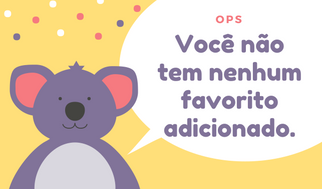

<!--
  Generated template for the FavoritosPage page.

  See http://ionicframework.com/docs/components/#navigation for more info on
  Ionic pages and navigation.
-->
<ion-header>

  <ion-navbar>
    <ion-title>Meus favoritos</ion-title>
  </ion-navbar>

</ion-header>


<ion-content>
	
  <ion-card *ngFor='let x of favoritos'>
    <!--  -->
    <div class="card-title">{{ x.title }}</div>
    <div class="card-subtitle">  <button ion-button small round icon-start (click)="remFavorito(x.nome)" color="light">
        <ion-icon name="trash"></ion-icon>
      </button><button  ion-button round icon-start small  color="light" (click)="infoAcudeSelecionado(x)">
        <ion-icon name="expand"></ion-icon>
      </button></div>
  </ion-card>
</ion-content>
